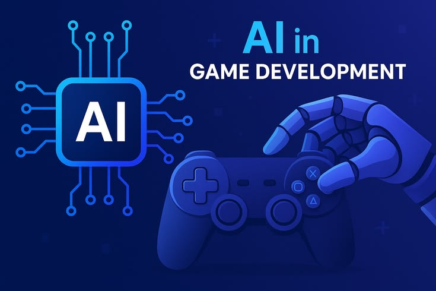

Inteligência artificial em imagens
Da educação à indústria, veja como a inteligência artificial está sendo aplicada em diferentes áreas e transformando atividades do cotidiano.
Tecnologia em diferentes cenários
A IA não está restrita aos computadores. Ela também pode integrar celulares, sistemas de saúde, ferramentas educacionais e processos industriais.
Explore a galeria
Aprendizado inteligente
Ferramentas digitais podem auxiliar na explicação de conteúdos, na revisão de matérias e na organização dos estudos.
Tecnologia médica
Sistemas de IA podem ajudar profissionais a analisar exames, imagens e grandes volumes de informações clínicas.
Assistentes virtuais
Recursos que reconhecem comandos de voz e ajudam a realizar pesquisas e tarefas em dispositivos digitais.
Máquinas inteligentes
A combinação de robótica e IA permite automatizar processos e auxiliar atividades em ambientes controlados.

Jogos e experiências digitais
A IA pode controlar personagens, adaptar desafios e contribuir para experiências interativas.
Automação profissional
Sistemas inteligentes auxiliam na análise de dados, na organização de documentos e em tarefas repetitivas.
Inovação exige responsabilidade
O uso da inteligência artificial deve considerar a segurança dos dados, a qualidade das informações e a participação humana nas decisões importantes.